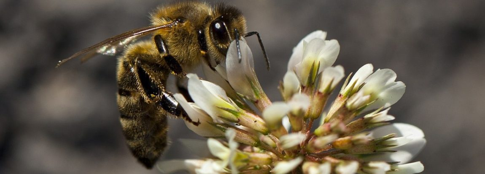
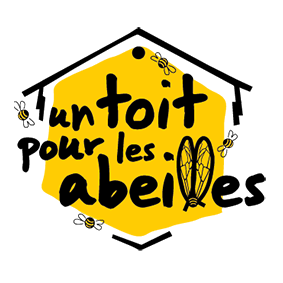
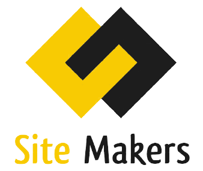
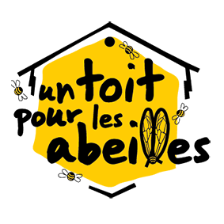
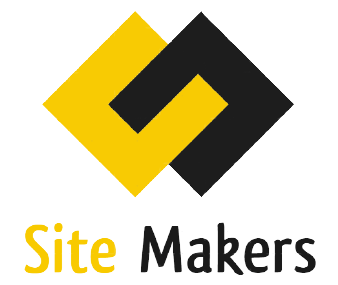

API'Culture
L'outil qui révolutionne la gestion de vos ruches Distributeur de matériel apicole en France Grâce à notre système nous vous offrons la possibilité de rester connecté où que vous soyez à vos ruchers. Notre système vous permet de consulter en temps réel l'ensemble des données essentielles qui concernent vos abeilles. Un véritable outils d'analyse et de gestion. Ecoresponsable fabriquées à partir de matériaux recyclée. Issu de matière première durable vous offrant une résistance aux intempéries. Une gamme profesionel est a votre disposition, ainsi qu'une gamme particulier.
Vous désirez nous rejoindre et utiliser notre technologie Française ! Nous avons pour but de favoriser le bien être de vos abeilles, et accroitre vos bénéfices, tout en vous permettant d'ameliorer vos conditions de travail. Vous etes pationée, n'attendez plus et découvrez nos offres.
Ils nous font confiance
 


